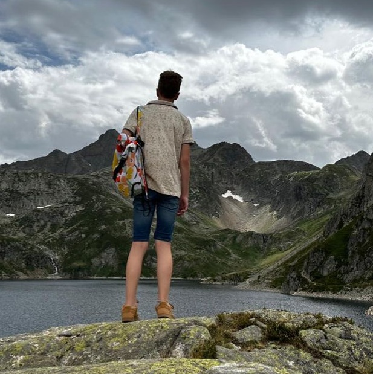
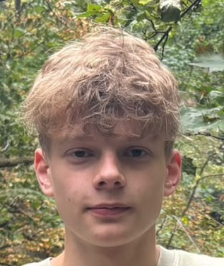
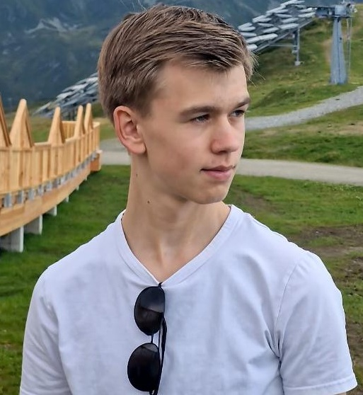
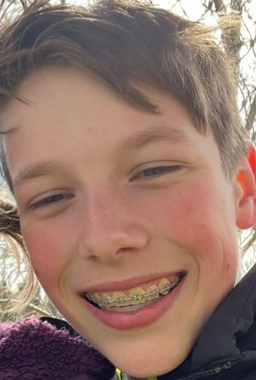

Mark Kramer
leeftijd: 16 jaar
woonplaats: Tollebeek
hobby's: Hapkido en gamen

Joël Pennekamp
leeftijd: 17 jaar
woonplaats: Kampen
hobby's: vissen en gamen

Lennard Knap
leeftijd: 19 jaar
woonplaats: Sint Jansklooster
hobby's: gamen

Errie van Rijn
leeftijd: 15 jaar
woonplaats: Staphorst
hobby's: vissen, gamen en voetbal

Hoornbeeck college
Het Hoornbeeck College in Kampen is een christelijke mbo-school waar studenten verschillende opleidingen kunnen volgen. De locatie biedt onderwijs in een betrokken en persoonlijke omgeving, waarbij naast vakkennis ook aandacht is voor de christelijke identiteit en persoonlijke ontwikkeling.